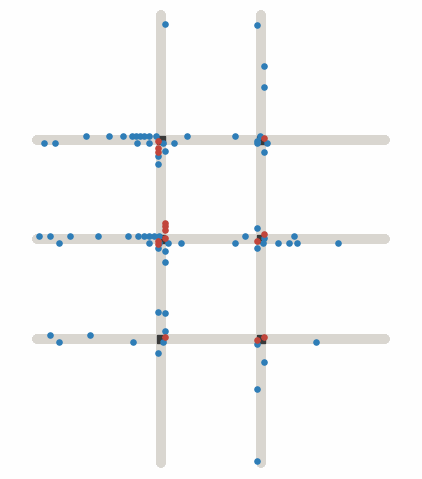
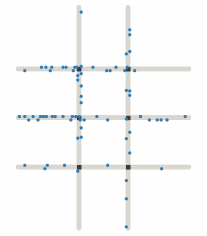
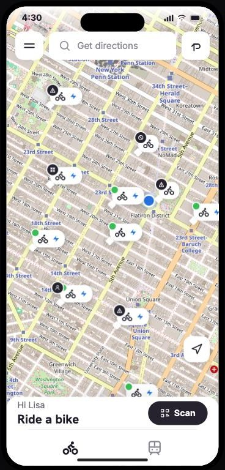
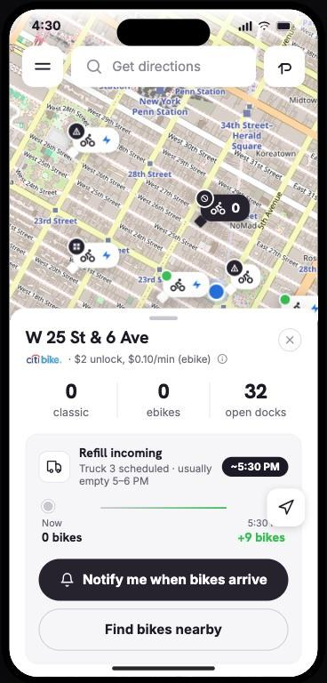
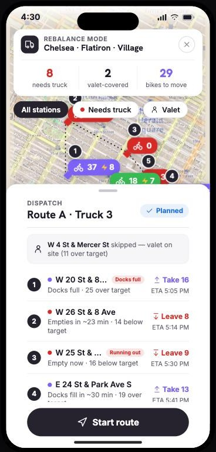
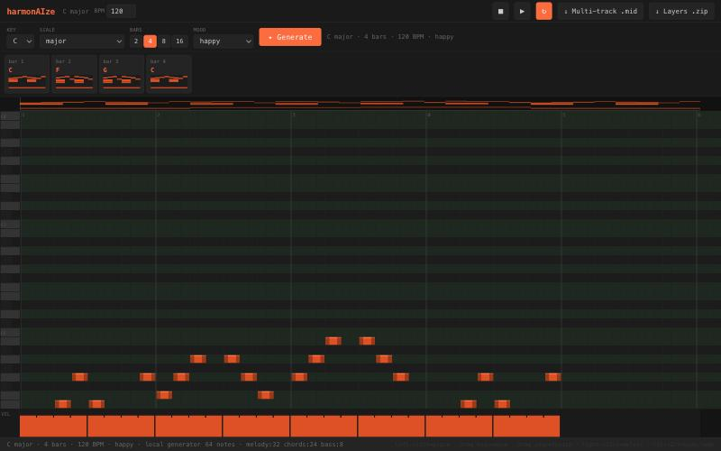
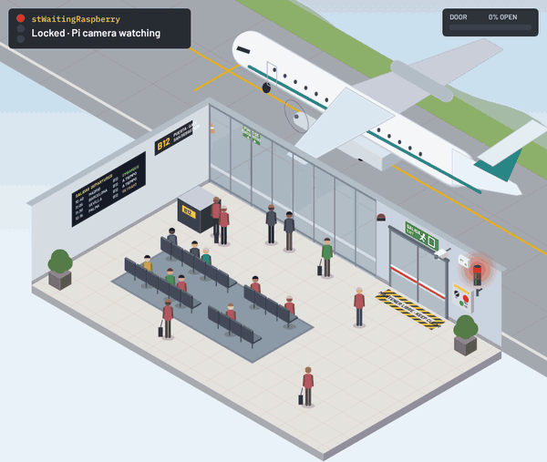

I make systems work for the people inside them instead of getting in their way. Each of my projects takes on one part of that: simulating how a network performs under load, deciding where inventory should sit, studying how people actually use a product, controlling equipment safely, and automating the steps that slow work down.
Fixed-Time (Webster) Signals

Dynamic Scheduling

What?
- Rebuild a Penn State IE 496 study that compared three ways to run a six-signal grid under Prof. Steven Landry
- Test whether its result, all three within 1.9% on clearing time, came from the experiment rather than from traffic
How?
- Wrote a time-stepped microsimulation in Python with no simulation libraries
- Krauss car-following, Poisson origin-destination demand, MUTCD pedestrian timing
- 120 runs: Webster fixed-time, semi-actuated, and reservation scheduling at 5 demand levels × 8 seeds
Results
- Scheduling cut stops per vehicle 4.5 to 5.1×
- Above ~1,800 veh/h semi-actuated wins on delay: 92.1 s vs. 127.7 s at 3,000
- Pedestrian wait under scheduling rose 14.3 s → 34.6 s while signals held near 13 s
- An occupancy check exposed a safety gap in the scheduler
Show the data
Averages of 8 seeds per demand level; 241,938 vehicles simulated. Limits: two-phase signals, one lane per direction, perfect sensing for the scheduler, textbook calibration.



What?
- Show riders that an empty station will be refilled before they walk to it
- Give operators a dispatch view built on the same data
How?
- Classified each station as surplus or deficit from capacity, target inventory, and current bikes
- Built rider and operator views in React on real Leaflet / OpenStreetMap tiles
- Excluded staffed valet stations from truck routing
Results
- Live, fully navigable prototype with refill ETAs, a notify toggle, and a load/unload stop list
- Station data and the truck route are a scripted demo; next is a demand forecast and a routing solver on public trip data
What?
- Learn how a four-person household actually lives with Glance AI's ambient screens on DirecTV over four weeks
How?
- Directed a remote on-site observer: daily logs, photos, and voice notes, with weekly video check-ins
- Rolled daily logs into weekly reflections, then a final synthesis
Results
- Synthesis report for the product team ranking content performance
- Compared trust and engagement by age and comfort with technology, with specific product recommendations
UX Research & Data Analyst Intern, March to May 2026. The report and data belong to Glance, so they are not shared here.

What?
- Generate a loop in any key and mood as editable MIDI instead of a finished audio file
- Built with a collaborator
How?
- React, TypeScript, and Tone.js with three separate voices: melody, chords, bass
- Uses Claude when an API key is set, otherwise a local music-theory generator across nine scale modes
Results
- Live browser demo with piano-roll editing and no server
- Exports one multi-track .mid or per-layer stems

What?
- A Beckhoff PLC controller for an airport emergency exit that stays locked in service and opens for an emergency, a camera alert, or a lost connection
- Team project in industrial automation, taught in Spanish, spring 2026
How?
- Modeled operating and failure modes in GRAFCET and GEMMA: 15 states, 37 transitions
- TwinCAT 3 on EtherCAT I/O, a stepper-driven door, and a Raspberry Pi camera over OPC UA with a 3 s heartbeat watchdog
Results
- I wrote the transition logic in the main function block that governs when the controller changes operating modes
- A fail-open design: if the Pi goes silent for 3 s, the door opens and the alarm sounds
What?
- Small servers that connect an AI assistant to the apps I use, each built to remove one bottleneck
How?
- daw-mcp: reads and edits Ableton Live project files (levels, panning, compressors, EQs, limiters)
- aula-virtual-mcp: signs in to Blackboard through the browser with Playwright to pull courses, grades, and files
- claude-relay: a message queue that lets separate Claude Code sessions coordinate
Results
- Used aula-virtual-mcp all semester at TECNUN
- All three are open source on GitHub